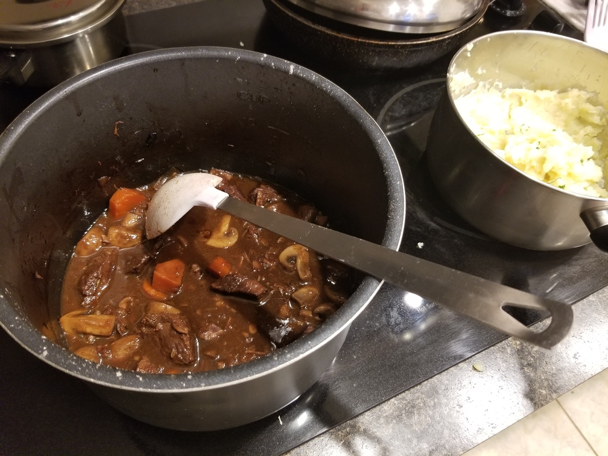
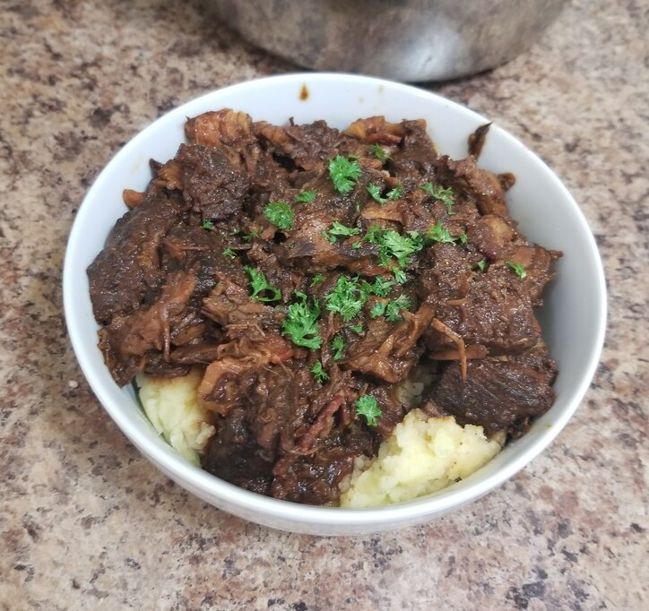

Julia Child's Beef Bourguignon
Homepage
A classic and hearty beef stew perfect for warming the bones in the winter.
Based on Julia Child's recipe.
Ingredients:
*Note: Ingredient quantities are approximate, I suggest trying to match
the amounts the first time you try the recipe then adjust to your liking thereafter
Optional:
- 3-6 Pieces Bacon (chopped)
- 18-24 Pearl Onions
- 1-2 Cups Mushrooms (e.g. criminis, white, chantrelles, etc...)
- 4 Sprigs Parsley
- 3-4 Tablespoons Butter (Preferably grass fed)
Required:
- 1-2 Large (or 3 small-med) Carrots (chopped)
- 1 Large White Onion (chopped)
- Cooking Fat (e.g. Olive Oil, Ghee, Beef Talow)
- 2 Tablespoons All Purpose Flour
- Salt (Table or preferably kosher for the beef)
- Ground Black Pepper
- 3lbs Stew Beef
- 3 Cups Dry Red Wine
- 2-3 Cups Beef Broth/Stock (Homemade stock is best)
- 1 Tablespoon Tomato Paste
- 2-6 Cloves Garlic (minced)
- 1-2 Bay Leaves
- 1-2 Sprigs Thyme (chopped)
- 1-2 Sprigs Rosemary (chopped)
Instructions
- Coat the stew beef in kosher salt at least 15 minutes before cooking.
- Heat a large, heavy pan (e.g. dutch oven) over medium-high heat.
- Add the beef to the pan and cook in batches until brown, rotate the individual
pieces until browned on all side. Make sure not to crowd the pot or the pieces will
steam instead of browning. You don't need to worry about overcooking the beef in this
recipe as the beef will be slow cooked over 3 hours until tender.
*Note: You may need to add more fat occasionally due to the liquid smoking off
- Once the beef is finished browning I like to heat the oven to 350C, you can also use
the stovetop if you like but it's harder to control the temperature.
- Remove the beef once browned and ensure there is fat remaining in the pot, add in the
bacon and cook until browned, remove from the pot.
- Add in the onion and carrots and cook until soft, stirring occasionally.
- Add in the garlic and stir until fragrant, around 30 seconds.
- Add in the tomato sauce and stir around the pot.
- Add in the flour to thicken the mix, cook for around 30 seconds
- Deglaze the pan with red wine (add in a cup at a time) and scrape the brown bits (fond)
off the bottom of the pan with a wooden spoon.
- Add the beef and bacon back into the pot. Then add in the remaining red wine and stock
until the meat is covered. Add in the pearled onions, rosemary, thyme, and bay leaves.
- Cover the pot (leave slightly ajar) and transfer to the oven for 2-3 hours (until
fork tender). The stovetop can also be used at a low temperature such that the
liquid is slowly simmering.

- About 5-10 minutes before the beef is done, heat up a pan over medium heat and add the
mushrooms with butter, garlic can be added as well. Add salt and pepper and cook until soft.
- Remove the stew from the heat and mix with the mushrooms/garlic. Remove the bay leaves.
- The stew should be fairly thick (preference), if it is too thin boil over medium heat until
preferred consistency.
- Add garnish and serve to friends and family! Preferably with mashed potatoes.

Homepage